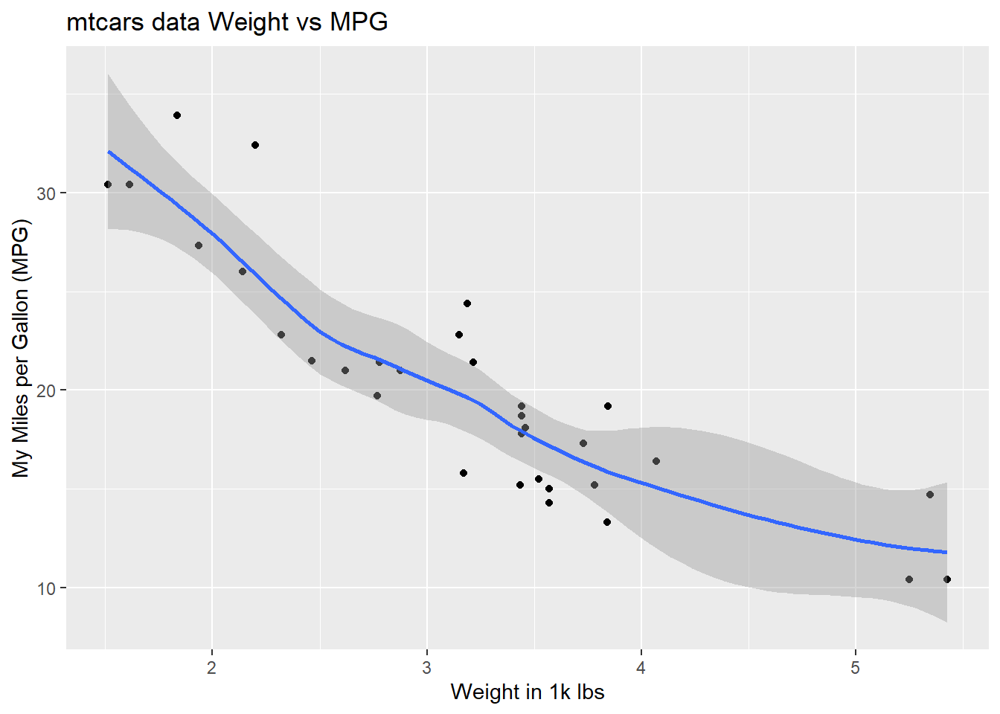

library(ggplot2)Here, you can see common Exploratory Data Analysis functions used to understand various datasets. We will use the preloaded “mtcars” dataset that is already installed with R Studio.
The “mtcars” dataset is comprised of 32 automobile models for the year 1973 -1974 with charactersits such as fuel consumption, horsepower and much more (1974 US Motor Trend magazine).
It is always best practice to load your libraries upfront, we will use ggplot2 for visualizations and
Using the ? within R Studio will showcase details of the dataset for you. This can be used for any function, not just EDA.
#ask away! ?mtcarsstarting httpd help server ... doneLoad the data via the data() command
#load data
data("mtcars")
- Examine the number of columns ncol() and rows nrows() of the dataset. This can help determine if the dataset will need to be subdivided (via the subset function) for further analysis.
#rows and columns count
nrow(mtcars)[1] 32ncol(mtcars)[1] 11
Seeing there are 32 rows and 11 columns, we can now use the head() command to view the first few rows
#first few rows head(mtcars)mpg cyl disp hp drat wt qsec vs am gear carb Mazda RX4 21.0 6 160 110 3.90 2.620 16.46 0 1 4 4 Mazda RX4 Wag 21.0 6 160 110 3.90 2.875 17.02 0 1 4 4 Datsun 710 22.8 4 108 93 3.85 2.320 18.61 1 1 4 1 Hornet 4 Drive 21.4 6 258 110 3.08 3.215 19.44 1 0 3 1 Hornet Sportabout 18.7 8 360 175 3.15 3.440 17.02 0 0 3 2 Valiant 18.1 6 225 105 2.76 3.460 20.22 1 0 3 1
While head() looks at the first few rows, tail() looks at the last.
#last few rows
tail(mtcars) mpg cyl disp hp drat wt qsec vs am gear carb
Porsche 914-2 26.0 4 120.3 91 4.43 2.140 16.7 0 1 5 2
Lotus Europa 30.4 4 95.1 113 3.77 1.513 16.9 1 1 5 2
Ford Pantera L 15.8 8 351.0 264 4.22 3.170 14.5 0 1 5 4
Ferrari Dino 19.7 6 145.0 175 3.62 2.770 15.5 0 1 5 6
Maserati Bora 15.0 8 301.0 335 3.54 3.570 14.6 0 1 5 8
Volvo 142E 21.4 4 121.0 109 4.11 2.780 18.6 1 1 4 2
- To find the variable type for each use the str() function to list each class type (string, integer, double, factor etc)
#variable name, type, count and first few observations
str(mtcars)'data.frame': 32 obs. of 11 variables:
$ mpg : num 21 21 22.8 21.4 18.7 18.1 14.3 24.4 22.8 19.2 ...
$ cyl : num 6 6 4 6 8 6 8 4 4 6 ...
$ disp: num 160 160 108 258 360 ...
$ hp : num 110 110 93 110 175 105 245 62 95 123 ...
$ drat: num 3.9 3.9 3.85 3.08 3.15 2.76 3.21 3.69 3.92 3.92 ...
$ wt : num 2.62 2.88 2.32 3.21 3.44 ...
$ qsec: num 16.5 17 18.6 19.4 17 ...
$ vs : num 0 0 1 1 0 1 0 1 1 1 ...
$ am : num 1 1 1 0 0 0 0 0 0 0 ...
$ gear: num 4 4 4 3 3 3 3 4 4 4 ...
$ carb: num 4 4 1 1 2 1 4 2 2 4 ...- To generate the summary statistics of each variable, use the summary() function to produce statistics such as Minimum, Maximum, Median, Mean and others.
#summary statistics of each variable by variable type
summary(mtcars) mpg cyl disp hp
Min. :10.40 Min. :4.000 Min. : 71.1 Min. : 52.0
1st Qu.:15.43 1st Qu.:4.000 1st Qu.:120.8 1st Qu.: 96.5
Median :19.20 Median :6.000 Median :196.3 Median :123.0
Mean :20.09 Mean :6.188 Mean :230.7 Mean :146.7
3rd Qu.:22.80 3rd Qu.:8.000 3rd Qu.:326.0 3rd Qu.:180.0
Max. :33.90 Max. :8.000 Max. :472.0 Max. :335.0
drat wt qsec vs
Min. :2.760 Min. :1.513 Min. :14.50 Min. :0.0000
1st Qu.:3.080 1st Qu.:2.581 1st Qu.:16.89 1st Qu.:0.0000
Median :3.695 Median :3.325 Median :17.71 Median :0.0000
Mean :3.597 Mean :3.217 Mean :17.85 Mean :0.4375
3rd Qu.:3.920 3rd Qu.:3.610 3rd Qu.:18.90 3rd Qu.:1.0000
Max. :4.930 Max. :5.424 Max. :22.90 Max. :1.0000
am gear carb
Min. :0.0000 Min. :3.000 Min. :1.000
1st Qu.:0.0000 1st Qu.:3.000 1st Qu.:2.000
Median :0.0000 Median :4.000 Median :2.000
Mean :0.4062 Mean :3.688 Mean :2.812
3rd Qu.:1.0000 3rd Qu.:4.000 3rd Qu.:4.000
Max. :1.0000 Max. :5.000 Max. :8.000
To view relationships (correlation) between each variable, use the ggcorrplot() from the ggplot2 library. Pass the mtcars dataset through the correlation cor() generate the visualization.
Correlation is measured between +1.0 and -1.0 with positive values at 1 representing a perfect linear relationship and negative values at -1 representing a perfect negative linear relationship. A value of 0 means there is no relationship. Essentially, look for the bright red and blue squares to find the variables with the greatest correlation.
#visualization to find most related variables
ggcorrplot::ggcorrplot(cor(mtcars))Looking at the graphic above, you can see wt (weight) and mpg (miles per gallon) have a high negative relationship. Let’s use these two for the last couple steps…
- A simple histogram hist() can help visualize the distribution of the data between the two variables, weight and mpg. Older cars did not have the best mpg!
#two histograms!
hist(mtcars$mpg, main = "Histogram of MPG", xlab = "Miles Per Gallon")hist(mtcars$wt, main = "Histogram of weight", xlab = "Weight in 1k lbs")
- Using the plot() function we can create a scatter plot of the two variables, MPG and Weight.
plot(mtcars$wt, mtcars$mpg, main = "Scatter Plot of MPG vs Weight", xlab = "Weight (in 1k lbs)", ylab = "Miles Per Gallon")Looking at the graph we can see the correlation is negative as the data decreases in MPG as the Weight increases (remember, it was a blue square in the correlation matrix).
- BONUS! Let’s add a trend line comparing the two models…
plot(mtcars$wt, mtcars$mpg, main = "Scatter Plot of MPG vs Weight", xlab = "Weight (in 1k lbs)", ylab = "Miles Per Gallon")
# create linear model
model <- lm(mtcars$mpg ~ mtcars$wt)
# Add a trendline to the scatterplot, color blue to match previous graphic
abline(model, col = "blue")
That’s it! Thanks for reading and give EDA a try on your favorite dataset in R!